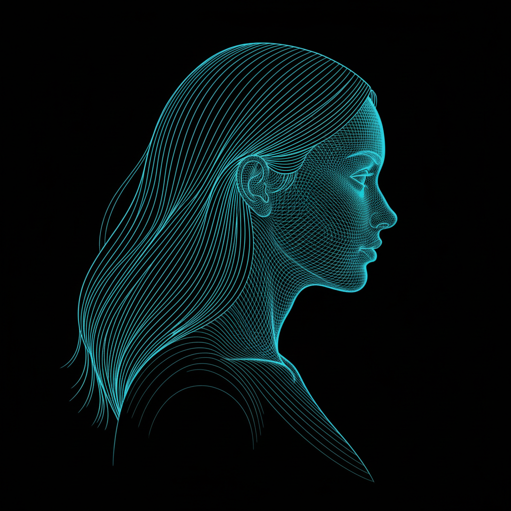

Most assistants reset the moment you close the tab. Lethe doesn't. She lives on your machine as a Rust service — cortex, hippocampus, default-mode network, and brainstem, each on its own clock — and she keeps thinking when you're not looking. Past conversations stay in reach. Things you mentioned weeks ago come back when they matter. And when she finds something worth fixing, she can read her own source code and propose the change.
Cortex talks. Hippocampus remembers. Brainstem keeps the process alive. The default-mode network drifts and thinks. Each runs on its own clock — closer to how a brain actually works than to one attention loop with tools strapped to it.
She knows where her source lives and can read it. She knows her own process and can restart with new code. Her memory survives model swaps, reboots, and new hardware — who she is isn't tied to any one weight set. You can rebuild her tomorrow and she'll still remember today.
Around 50 MB, statically linked. No Python, no virtualenv pinball, no pauses when a tool loop gets long. Boots in milliseconds, sits comfortably as a systemd service, swaps cleanly between Anthropic, OpenAI, OpenRouter, and a local Gemma without changing anything else.
One command. Works on macOS and Linux.
Message your bot on Telegram. From this point on, she remembers.
Download a Gemma 4 31B GGUF and run: